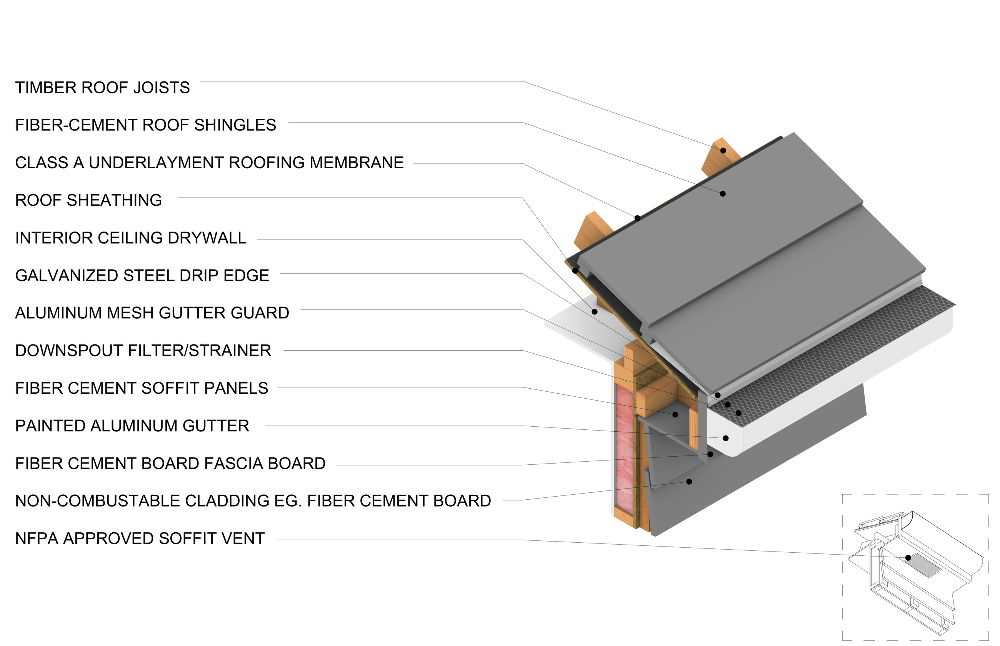
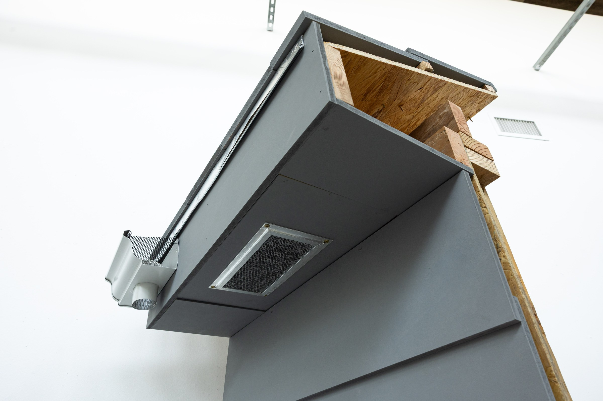
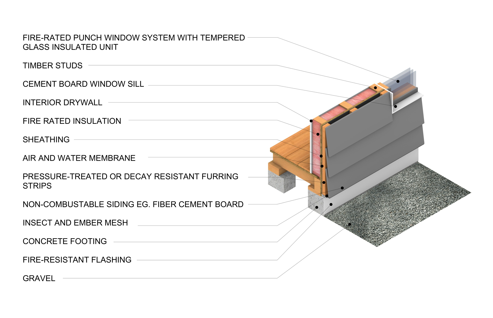
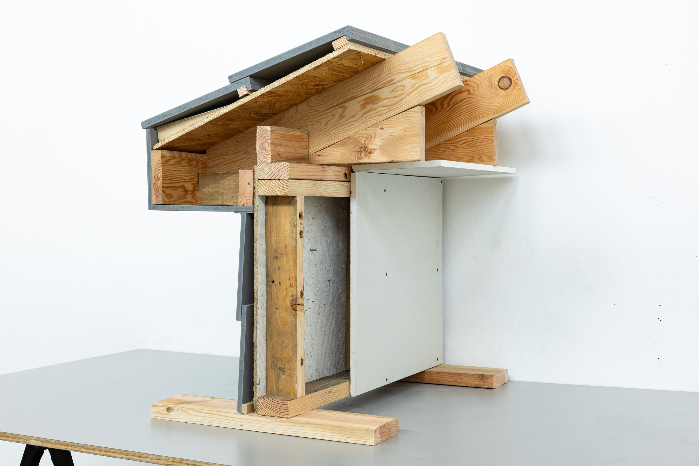
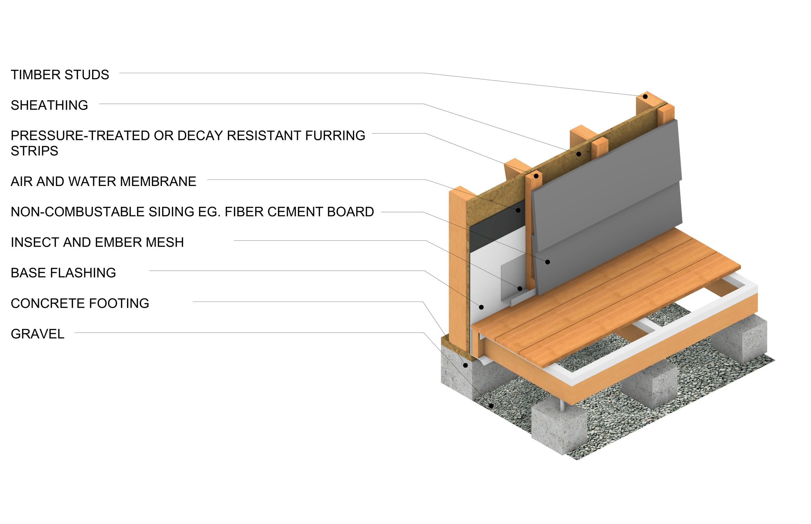
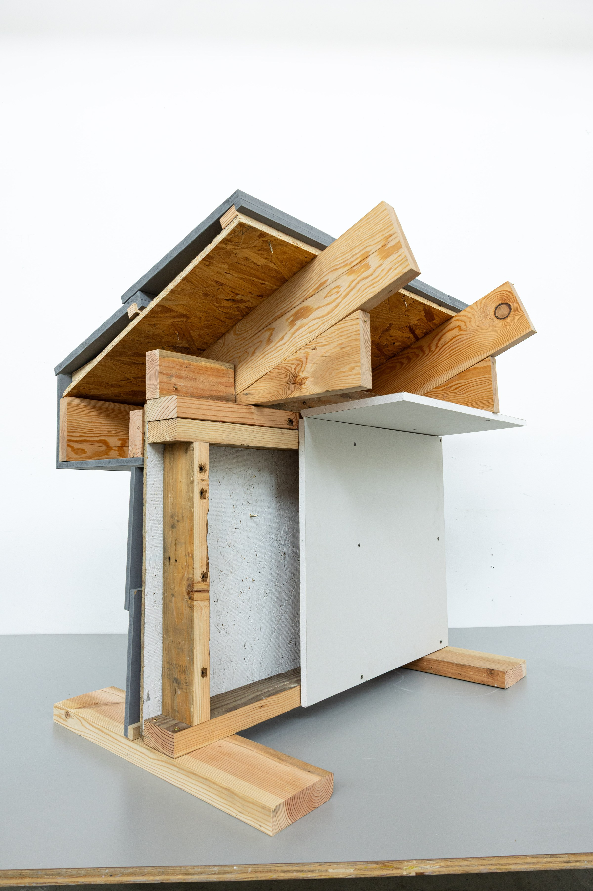

Resilient Futures
SCI-Arc formed the Resilient Futures Task Force after the January 2025 firestorms that burned through Altadena and the Pacific Palisades. One thing the fires left behind was suspicion of timber: people rebuilding wanted to know whether building in wood had made it worse.
These drawings and models were made for the task force's public work on that question, alongside its Demystifying Timber session. Nothing in them is exotic. They are the ordinary parts that make an ordinary timber house more likely to survive a fire, and the whole point is that you can see every one. Three conditions are drawn as annotated axonometrics and then built at full scale: the eaves and overhang, the wall, and the deck. I drew all three, and helped design and build the eaves and overhang.
The specification is the argument. Fiber-cement shingles over a Class A underlayment membrane, non-combustible fiber-cement cladding, soffit and fascia, NFPA-approved soffit vents, an aluminum mesh gutter guard and a downspout strainer to keep embers out of the gutter, fire-rated insulation, and a fire-rated window with tempered insulated glass. Built at full size, the vent screen and the gutter guard stop being line weights and become things you can stand in front of.





